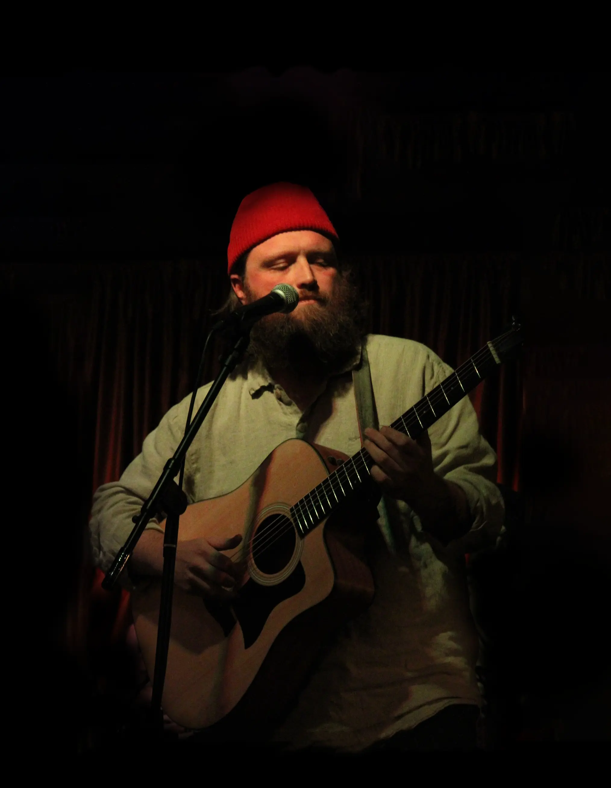

PERFORMANCE SCHEDULE
SPRING & SUMMER 2024
8/9
7PM | Middleburgh, NY
8/16
with Rixey, Couple of Wanderers, and more
8PM | Bearsville, NY

Chris O'Driscoll
A singer, songwriter and multi-instrumentalist who is equally at home with his guitar, banjo, harmonica, or microphone, Chris O'Driscoll combines Folk, Indie, Jazz, Country, Western and Blues into his unique blend of Americana music.
Originally hailing from America's heartland, he has called the state of New York his home for over a decade. Currently based in Woodstock, NY at the heart of the Catskill Mountains and Hudson Valley regions, his music explores our relationships with nature, the unknown, ourselves and each other.